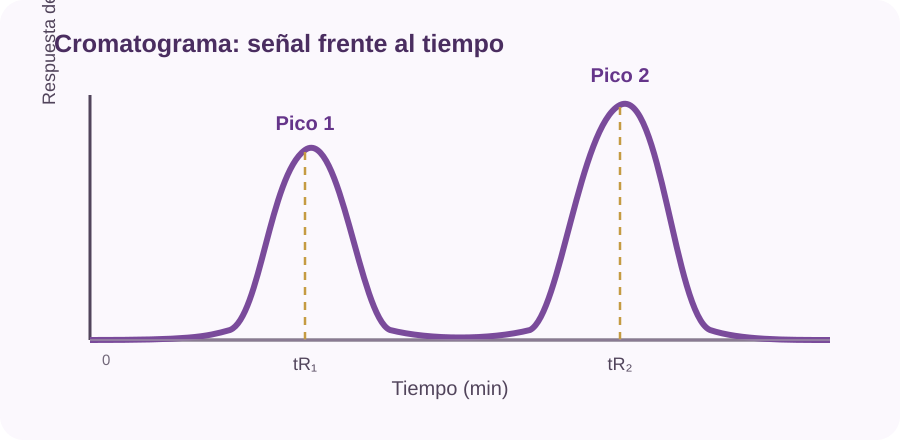
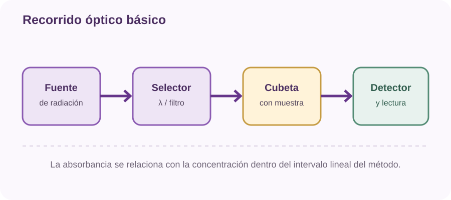
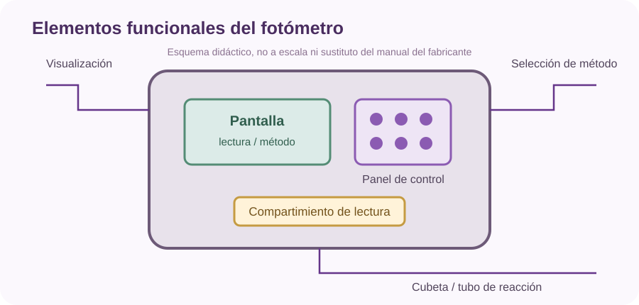
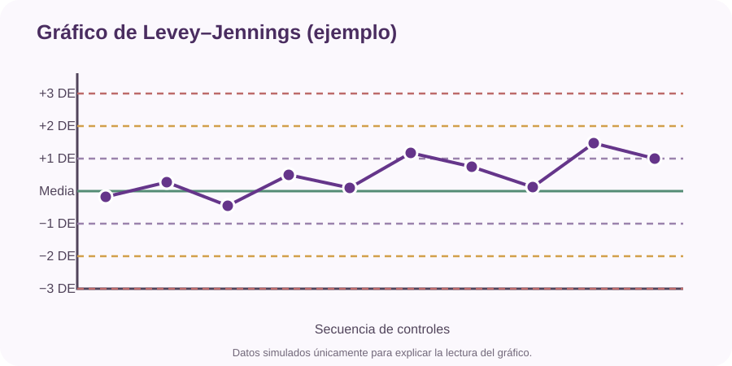

La fase móvil es un gas portador. Se aplica a compuestos volátiles y termoestables. La separación ocurre en una columna y los analitos se detectan al salir de ella.
Biblioteca digital universitaria
Explora, comprende y pon a prueba tus conocimientos
Este recurso reúne fundamentos, procedimientos, aplicaciones bioquímicas y farmacéuticas, ejercicios y actividades de autoevaluación. Está organizado como un libro digital para consultar cada capítulo de forma independiente.
01 · Cromatografía
Separación de componentes de una mezcla mediante su distribución entre fases.
02 · Espectrofotometría
Medición de la interacción entre radiación y materia para el análisis cualitativo y cuantitativo.
03 · Analizadores Stat Fax
Principio fotométrico, operación y aplicaciones del Stat Fax 1904 Plus.
04 · Control de calidad
Calibración, controles, estadística, gráficos e interpretación de reglas de control.
Objetivo educativo
Integrar los principios fisicoquímicos y los procedimientos de métodos analíticos utilizados en el laboratorio clínico y farmacéutico, desarrollando la capacidad de calcular, interpretar y evaluar resultados confiables.
Cómo utilizar la biblioteca: selecciona un capítulo en el menú superior, estudia sus apartados y luego ingresa a Juegos para comprobar lo aprendido. Los ejercicios son ejemplos didácticos; los procedimientos reales deben seguir el método validado, el inserto del reactivo y las indicaciones del laboratorio.
Cromatografía

La cromatografía es un conjunto de técnicas de separación en las que los componentes de una mezcla se distribuyen de manera diferente entre una fase estacionaria y una fase móvil. La distinta afinidad de cada compuesto por ambas fases provoca velocidades de migración diferentes y permite separarlos.
Fundamento y conceptos
Fase estacionaria
Material que permanece fijo o inmovilizado; puede ser sólido o un líquido soportado sobre un sólido.
Fase móvil
Fluido que se desplaza a través de la fase estacionaria y transporta los componentes: puede ser líquido o gas.
Elución
Proceso por el cual la fase móvil arrastra los analitos a través del sistema cromatográfico.
Clasificación general
| Criterio | Tipos | Característica |
|---|---|---|
| Estado de fase móvil | Gas (CG) / Líquido (CL) | La fase móvil es un gas o un líquido. |
| Geometría | Columna / Planar | La fase estacionaria está en una columna o sobre una superficie plana. |
| Mecanismo | Adsorción, partición, intercambio iónico, exclusión por tamaño, afinidad | La separación depende de interacciones fisicoquímicas distintas. |
Parámetros cromatográficos
El tiempo de retención (tR) es el tiempo desde la inyección hasta la detección del analito. El tiempo muerto (tM) corresponde a una especie no retenida. El factor de retención expresa cuánto se retiene un analito respecto a la fase móvil.
k' = (tR − tM) / tM
La resolución entre dos picos se estima mediante:
Rs = 2 (tR₂ − tR₁) / (w₁ + w₂)
donde w₁ y w₂ son los anchos de los picos en la línea de base. Una resolución cercana o superior a 1,5 suele considerarse indicativa de separación de línea de base en condiciones habituales.
Procedimiento general en cromatografía líquida
- Seleccionar columna y fase móvil de acuerdo con las propiedades del analito.
- Preparar, filtrar y desgasificar la fase móvil cuando el método lo requiera.
- Equilibrar el sistema y verificar presión, flujo y línea base.
- Preparar estándares y muestras; filtrar si corresponde.
- Inyectar un volumen definido y registrar el cromatograma.
- Identificar picos por comparación con estándares y cuantificar mediante calibración.
- Evaluar aptitud del sistema, registrar datos y limpiar según el procedimiento.
Aplicaciones en Bioquímica y Farmacia
- Separación y cuantificación de principios activos e impurezas en medicamentos.
- Determinación de metabolitos, aminoácidos, vitaminas y compuestos en matrices biológicas.
- Control de pureza, estabilidad y degradación de formulaciones farmacéuticas.
- Identificación de componentes en muestras complejas antes de su cuantificación.
Ejercicio resuelto: un compuesto presenta tR = 8,0 min y tM = 2,0 min. Entonces k' = (8−2)/2 = 3,0. El analito permanece retenido tres veces el tiempo muerto, según esta definición del factor de retención.
Ventajas y limitaciones
Permite separar mezclas complejas con alta selectividad y sensibilidad. Sus limitaciones incluyen costo de equipos y columnas, consumo de solventes, necesidad de optimizar condiciones y dependencia de estándares y preparación de muestra.
Autoevaluación del capítulo
Desarrollo ampliado del capítulo
1. Evolución y principio de separación
La cromatografía permite separar, identificar y, en muchos casos, cuantificar los componentes de una mezcla. La muestra se introduce en un sistema donde una fase móvil se desplaza en contacto con una fase estacionaria. Cada analito establece interacciones diferentes —por ejemplo, adsorción, partición, interacción iónica o afinidad específica— y por eso avanza a una velocidad distinta. La separación no depende simplemente del tamaño o del color, sino de las propiedades fisicoquímicas del analito y de las condiciones del sistema.
2. Cromatografía en papel y capa fina (TLC)
En cromatografía en papel, el papel actúa como soporte de la fase estacionaria y el disolvente asciende por capilaridad. En cromatografía en capa fina, una placa recubierta con sílica gel o alúmina funciona como fase estacionaria. Se marca una línea de origen, se deposita una pequeña cantidad de muestra y se coloca la placa en una cámara con fase móvil, cuidando que el nivel del disolvente quede por debajo de la muestra. Cuando el frente del solvente avanza, se retira la placa, se marca inmediatamente el frente y se visualizan las manchas mediante luz UV o reactivos reveladores.
Rf = distancia recorrida por el analito / distancia recorrida por el frente del disolvente
El valor de Rf se encuentra entre 0 y 1 en condiciones habituales. Deben compararse sustancias en la misma placa o bajo condiciones idénticas, porque el Rf depende de la fase estacionaria, composición del eluyente, temperatura y saturación de la cámara.
3. Cromatografía en columna
La fase estacionaria se empaca dentro de una columna y la fase móvil atraviesa el lecho. La muestra se aplica en la parte superior y los componentes eluyen en distintos tiempos. Es útil para separar y purificar cantidades preparativas. La selección de la polaridad de la fase móvil influye en la retención: en fase normal, una fase estacionaria polar retiene con mayor fuerza compuestos polares; en fase reversa, la fase estacionaria es menos polar y la fase móvil suele ser más acuosa.
4. Cromatografía de gases (GC) y líquida de alta resolución (HPLC)
Una bomba impulsa la fase móvil líquida a través de una columna empacada. Es apropiada para numerosos compuestos no volátiles o termolábiles y permite trabajar con detectores UV-Vis, fluorescencia u otros.
5. Parámetros para evaluar una separación
- Tiempo de retención (tR): tiempo desde la inyección hasta el máximo del pico del analito.
- Tiempo muerto (tM): tiempo de paso de una especie no retenida.
- Factor de retención (k'): relaciona la retención del analito con el tiempo muerto.
- Resolución (Rs): expresa el grado de separación entre dos picos.
- selectividad (α): compara la retención relativa de dos analitos.
- Eficiencia: se relaciona con el ensanchamiento de banda y suele describirse mediante el número de platos teóricos.
α = k'₂ / k'₁ (para k'₂ mayor que k'₁)
6. Fuentes de error y buenas prácticas
Una muestra demasiado concentrada o aplicada en exceso produce manchas o picos anchos; una columna mal equilibrada puede generar tiempos de retención inestables; burbujas, fugas, variaciones de flujo, fase móvil mal preparada o una columna deteriorada afectan la reproducibilidad. Se debe registrar lote de columna, composición de fase móvil, flujo, temperatura, volumen de inyección, tiempos y resultados de aptitud del sistema.
7. Aplicación bioquímica y farmacéutica
En farmacia, HPLC se utiliza para valorar principios activos, impurezas, productos de degradación y perfiles de disolución. En bioquímica puede apoyar la determinación de vitaminas, aminoácidos, fármacos y metabolitos en matrices biológicas. La identificación debe sustentarse en estándares, tiempos de retención y, cuando corresponda, información espectral o confirmatoria.
Conclusión del capítulo: la cromatografía es una herramienta de separación versátil. Para obtener resultados confiables se debe seleccionar adecuadamente la fase móvil y estacionaria, optimizar las condiciones, evaluar la aptitud del sistema y comparar con materiales de referencia.
1. ¿Qué explica principalmente la separación cromatográfica?
2. Si tR=8 min y tM=2 min, ¿cuánto vale k'?
Espectrofotometría

La espectrofotometría estudia la interacción de la radiación electromagnética con la materia. En el análisis cuantitativo se mide la radiación absorbida por una muestra a una longitud de onda seleccionada y se relaciona la señal con la concentración del analito.
Fundamento: absorbancia y transmitancia
La transmitancia es la fracción de luz incidente que atraviesa la muestra: T = P/P₀. El porcentaje de transmitancia es %T = 100T. La absorbancia se define como:
A = log₁₀(P₀/P) = −log₁₀(T)
Donde P₀ es la potencia radiante incidente y P la potencia transmitida. La absorbancia es adimensional.
Ley de Beer-Lambert
A = ε · b · c
ε es la absortividad molar, b la longitud del trayecto óptico y c la concentración molar. La relación es lineal bajo condiciones apropiadas: radiación suficientemente monocromática, soluciones homogéneas y diluidas, ausencia de reacciones o interferencias significativas y funcionamiento adecuado del instrumento.
Componentes del espectrofotómetro
Fuente de luz
Produce radiación en el intervalo espectral de trabajo.
Selector de longitud de onda
Filtro o monocromador que selecciona la región de radiación.
Compartimiento de muestra
Aloja la cubeta con blanco o muestra.
Detector y sistema de lectura
Convierte la radiación recibida en señal y presenta absorbancia o transmitancia.
Procedimiento general
- Encender y verificar el equipo según el manual.
- Seleccionar la longitud de onda indicada por el método.
- Preparar blanco, estándares y muestras.
- Limpiar la cubeta por fuera, evitar huellas en las caras ópticas y eliminar burbujas.
- Ajustar con el blanco y medir estándares y muestras bajo las mismas condiciones.
- Construir curva de calibración o aplicar el procedimiento validado.
- Registrar longitud de onda, lecturas, unidades y condiciones.
Ejercicio resuelto por comparación con estándar
Si el método permite la proporcionalidad con estándar único, Cx = (Ax/Astd) × Cstd. Para Ax=0,36; Astd=0,24 y Cstd=50 mg/L:
Cx = (0,36 / 0,24) × 50 = 75 mg/L
Esta comparación solo es válida si estándar y muestra se procesaron con el mismo método, condiciones y respuesta lineal. Si el método exige curva de calibración, se utiliza la ecuación de la curva.
Aplicaciones
- Cuantificación de analitos que forman compuestos coloreados en química clínica.
- Determinación de concentración de principios activos y control de calidad farmacéutico.
- Seguimiento de reacciones enzimáticas mediante cambios de absorbancia.
- Estudios de pureza, estabilidad y cinética de reacciones.
Desarrollo ampliado del capítulo
1. Regiones del espectro y selección de longitud de onda
La espectrofotometría UV-Visible utiliza radiación ultravioleta y visible. La longitud de onda se selecciona de acuerdo con la absorción del analito o del producto coloreado de la reacción. Habitualmente se trabaja cerca de la longitud de onda de máxima absorción (λmáx), porque pequeños cambios de longitud de onda producen un efecto menor sobre la señal y se mejora la sensibilidad, siempre que el método lo indique.
2. Tipos de instrumentos y sistemas ópticos
La luz atraviesa blanco o muestra en mediciones separadas. Su diseño es sencillo.
Compara la señal de muestra y referencia para compensar fluctuaciones de la fuente.
Seleccionan bandas de longitud de onda; son frecuentes en fotómetros clínicos.
Dispersa la radiación y permite seleccionar una banda más estrecha.
3. Ley de Beer-Lambert y sus condiciones
La absorbancia es proporcional a la concentración y al trayecto óptico cuando el sistema cumple las condiciones del método. La absortividad molar depende de la sustancia y de la longitud de onda. Si se duplica la concentración en el intervalo lineal, la absorbancia también se duplica, manteniendo constantes las demás condiciones.
A = εbc y T = 10⁻ᴬ
Las desviaciones pueden ser reales (interacciones químicas, asociación o disociación, cambios de pH) o instrumentales (radiación policromática, luz parásita, detector fuera de rango). También influyen turbidez, partículas, cubetas sucias y concentraciones fuera del intervalo lineal.
4. Curva de calibración
Se preparan varios estándares de concentración conocida, se mide su absorbancia y se representa absorbancia frente a concentración. En el intervalo lineal se ajusta una recta:
A = mC + b ; C muestra = (A muestra − b) / m
La pendiente m expresa la sensibilidad del método y el intercepto b representa la señal estimada cuando la concentración es cero. No basta con observar un R² alto: también se revisan residuos, rango, blancos, estándares y controles.
5. Blanco, calibrador y control
- Blanco: contiene los componentes necesarios para corregir la señal de fondo, sin el analito o sin el componente que genera la señal, según el método.
- Calibrador/estándar: material con concentración asignada que establece la relación señal-concentración.
- Control: material independiente utilizado para vigilar que el método mantenga un desempeño aceptable.
6. Aplicaciones en Bioquímica y Farmacia
En química clínica, muchos métodos colorimétricos cuantifican glucosa, urea, ácido úrico, colesterol y otros analitos. Enzimología, la variación de absorbancia puede seguir la velocidad de una reacción. En farmacia, la espectrofotometría puede apoyar la valoración de principios activos, uniformidad, disolución y estudios de estabilidad, siempre que el método sea selectivo y esté validado para la matriz.
7. Control de calidad y fuentes de error
Se comprueba el blanco, la linealidad, la repetibilidad, la estabilidad de la fuente, la longitud de onda y el desempeño del detector. Las cubetas deben ser compatibles con la región espectral; las de vidrio común no son adecuadas para toda medición UV. Las caras ópticas deben estar limpias, orientadas de forma consistente y libres de burbujas. La muestra debe estar homogénea y dentro del rango de lectura.
Conclusión del capítulo: la espectrofotometría transforma una señal óptica en información cuantitativa. La calidad del resultado depende de la selección correcta de longitud de onda, blanco, calibración, rango lineal y control de interferencias.
3. ¿Cuál es la expresión de Beer-Lambert?
4. Ax=0,36; Astd=0,24; Cstd=50 mg/L. ¿Cx?
Analizadores Stat Fax

STAT FAX® 1904 PLUS
El STAT FAX® 1904 PLUS, fabricado por Awareness Technology, Inc., es un fotómetro de química clínica para diagnóstico in vitro, controlado por microprocesador. Según el POE de manejo de equipo utilizado en el laboratorio, trabaja con un sistema óptico bicromático y seis filtros de longitud de onda, y permite mediciones de absorbancia y cálculos de concentración o actividad mediante distintos modos de operación.
Fuente práctica: POE de manejo de equipo, año 2026, “Espectrofotómetro GENESYS 30 y STAT FAX 1904 PLUS”. El POE describe el sistema óptico, filtros, modos de lectura, procedimientos, registros y acciones ante controles rechazados.
Fundamento fotométrico
La muestra reacciona con reactivos específicos y puede producir un cambio de color o una señal óptica. El equipo mide la absorbancia. En condiciones definidas por el método, la señal se relaciona con la concentración del analito o con la velocidad de reacción.
El sistema bicromático utiliza una longitud de onda principal y, cuando el método lo requiere, una longitud de onda diferencial para compensar interferencias del recipiente u otros componentes de la muestra.
Modos de operación y análisis
| Modo | Uso general |
|---|---|
| Absorbancia | Lectura directa de la señal óptica. |
| Estándar | Calcula concentración comparando con un estándar conocido. |
| Factor | Multiplica la señal por un factor establecido por el método. |
| Multipunto | Utiliza varios calibradores para generar una curva. |
| RATE / cinético | Registra el cambio de absorbancia durante un intervalo para estimar velocidad de reacción. |
| Punto final | Mide la absorbancia una vez desarrollada la reacción en el tiempo indicado. |
Componentes y funciones
- Sistema óptico: fuente de luz y filtros para seleccionar la longitud de onda.
- Área de lectura: posición donde se introduce el tubo de reacción.
- Sistema de incubación: mantiene las condiciones de temperatura requeridas por los métodos compatibles.
- Pantalla y teclado: permiten programar pruebas y visualizar resultados.
- Microprocesador: controla las funciones y realiza cálculos configurados.
Procedimiento operativo resumido
- Verificar limpieza, conexión, área de lectura, tubos y estado general del equipo.
- Encender y confirmar que el equipo no presente errores.
- Seleccionar el método, modo de operación y filtro requerido.
- Configurar filtro diferencial, tiempo de espera y tiempo de lectura si corresponde.
- Introducir estándar o factor según el método.
- Preparar blanco, reactivos, controles y muestras siguiendo el inserto.
- Procesar calibradores y controles; no aceptar resultados de pacientes si el control no cumple los criterios establecidos.
- Leer las muestras y registrar resultado, unidad, método, fecha, operador y observaciones.
- Retirar tubos, limpiar derrames, revisar el área de lectura y apagar según el procedimiento del laboratorio.
Ejemplo de cálculo con estándar
Cuando el método está configurado para comparación con estándar único y la respuesta es proporcional:
Concentración muestra = (Absorbancia muestra / Absorbancia estándar) × Concentración estándar
Si A muestra = 0,30; A estándar = 0,20 y el estándar = 100 mg/dL:
(0,30 / 0,20) × 100 = 150 mg/dL
Importante: el ejemplo ilustra la relación matemática. En la práctica se debe utilizar el modo de cálculo, calibrador, factor, blanco, filtro y tiempos establecidos por el método específico.
Aplicaciones en laboratorio clínico
Según el método y los reactivos compatibles, los fotómetros de química clínica pueden emplearse en determinaciones colorimétricas o cinéticas como glucosa, urea, creatinina, ácido úrico, colesterol y actividades enzimáticas. La prueba concreta depende del reactivo y de su inserto, no únicamente del equipo.
Interpretación y registros
Para interpretar un resultado se consideran longitud de onda, filtro diferencial, blanco, estándar o factor, incubación, temperatura, tiempo de lectura, calidad de muestra, rango de trabajo, interferencias y resultados de control. El POE recomienda conservar código de muestra, fecha y hora, prueba, resultado, unidades, operador, equipo, método, observaciones y validación.
Desarrollo ampliado del capítulo
1. Identificación y principio del equipo
El STAT FAX® 1904 PLUS de Awareness Technology es un fotómetro de química clínica para diagnóstico in vitro, controlado por microprocesador. El POE de laboratorio describe un sistema óptico bicromático y seis filtros estándar: 340, 405, 450, 505, 545 y 600 nm. El filtro que se selecciona depende del método y del inserto del reactivo; no se debe elegir una longitud de onda por costumbre.
2. Componentes funcionales
- Fuente de radiación y sistema óptico: proporcionan y conducen la luz utilizada para medir absorbancia.
- Filtros: seleccionan la longitud de onda principal y, si el método lo requiere, la diferencial.
- Compartimiento de lectura: recibe el tubo de reacción en la posición indicada.
- Sistema de incubación: permite mantener condiciones térmicas requeridas por los métodos compatibles.
- Pantalla y teclado: permiten seleccionar parámetros, introducir datos y visualizar resultados.
- Microprocesador: coordina la operación y ejecuta los cálculos configurados.
3. Lectura bicromática
En una lectura bicromática se utiliza una longitud de onda principal para medir la señal de interés y una longitud de onda diferencial cuando el método lo establece. La segunda lectura puede ayudar a compensar absorbancia de fondo debida al recipiente o a componentes de la muestra. No sustituye la preparación correcta del blanco ni elimina todas las interferencias.
4. Modos y cálculos
| Modo | Qué realiza | Aplicación general |
|---|---|---|
| Absorbancia | Presenta la señal óptica medida. | Verificación o lectura directa. |
| Estándar | Relaciona absorbancia de muestra con la de un estándar. | Métodos de estándar único. |
| Factor | Multiplica la señal por un factor definido. | Métodos cuyo inserto proporciona factor. |
| Multipunto | Utiliza varios calibradores para una curva. | Cuantificación en un intervalo de concentración. |
| Punto final | Lee tras el tiempo de reacción indicado. | Reacciones colorimétricas de punto final. |
| RATE | Registra el cambio de absorbancia en el tiempo. | Determinaciones cinéticas/enzimáticas. |
5. Secuencia de trabajo y preparación
- Verificar conexión eléctrica y selección de voltaje según el suministro.
- Encender el equipo y esperar el inicio del sistema; comprobar que no existan mensajes de error.
- Revisar limpieza, área de lectura y condiciones de temperatura cuando exista incubación.
- Seleccionar modo, filtro principal y filtro diferencial si corresponde.
- Introducir parámetros del método: tiempos, estándar o factor y demás condiciones.
- Preparar blanco, calibradores, controles y muestras siguiendo el inserto del reactivo.
- Leer el blanco y comprobar la lectura; continuar con calibración y controles.
- Aceptar resultados de pacientes únicamente cuando el control de calidad cumpla los criterios establecidos.
- Al finalizar, retirar tubos, limpiar derrames, revisar el área, registrar resultados y apagar según el POE.
6. Calibración y verificación
La calibración puede realizarse mediante estándar único, factor o varios puntos, según el método. La selección debe respetar el inserto del reactivo y el rango de medición. El POE menciona REDI-CHECK® como material para verificar el desempeño fotométrico y la linealidad. Esta verificación no reemplaza el control interno de cada corrida.
7. Aplicaciones y limitaciones
El equipo puede emplearse en ensayos colorimétricos de punto final y cinéticos compatibles con sus características. La prueba concreta (por ejemplo, glucosa, urea, creatinina, ácido úrico o actividad enzimática) depende del reactivo, el método, la longitud de onda, los tiempos y la calibración indicada. El fotómetro no identifica por sí solo el analito ni corrige una muestra mal recolectada.
8. Errores frecuentes y mantenimiento básico
Entre los problemas que afectan la medición se encuentran tubos sucios o rayados, burbujas, volumen incorrecto, blanco mal preparado, filtro equivocado, tiempos de lectura incumplidos, temperatura inadecuada, reactivos vencidos y calibración incorrecta. Se deben documentar las incidencias, mantener limpio el compartimiento y realizar las verificaciones indicadas por el manual y el POE.
Conclusión del capítulo: el STAT FAX 1904 PLUS permite obtener mediciones fotométricas útiles en química clínica, pero la confiabilidad depende del método, la calibración, el blanco, los controles, la correcta manipulación de tubos y el registro trazable.
5. Según el POE, ¿qué sistema óptico utiliza el STAT FAX 1904 PLUS?
6. ¿Qué modo se utiliza para seguir una reacción cinética?
Control de calidad analítico

El control de calidad analítico comprende actividades planificadas para vigilar el desempeño del proceso de medición y detectar errores que puedan afectar la confiabilidad de los resultados. Incluye calibración, control interno, evaluación externa, análisis estadístico, interpretación de gráficos y acciones correctivas.
Calibrador y material de control
| Calibrador | Material de control |
|---|---|
| Establece la relación entre señal y concentración o ajusta el sistema según el método. | Evalúa si el sistema mantiene un desempeño aceptable durante la rutina. |
| Posee valores asignados para calibrar. | Posee intervalos o valores esperados para verificar resultados. |
Precisión y exactitud
Precisión
Grado de concordancia entre mediciones repetidas. Se relaciona con la dispersión aleatoria.
Exactitud
Proximidad del resultado al valor verdadero o de referencia; se evalúa mediante sesgo y otras comparaciones.
Estadística básica
Media: x̄ = Σxi / n
Desviación estándar muestral: s = √[Σ(xi−x̄)²/(n−1)]
Coeficiente de variación: CV% = (s / x̄) × 100
Sesgo% = [(media − valor asignado) / valor asignado] × 100
Ejercicio resuelto
Resultados de un control: 100, 102, 104, 102 y 102 mg/dL. La media es 102 mg/dL. La desviación estándar muestral es 1,41 mg/dL y CV = (1,41/102)×100 = 1,38 %. Si el valor asignado es 100 mg/dL, el sesgo porcentual es [(102−100)/100]×100 = +2 %.
Gráfico de Levey-Jennings
Representa los resultados de control a lo largo del tiempo. La línea central corresponde a la media y las líneas de referencia se sitúan habitualmente a ±1, ±2 y ±3 desviaciones estándar. Permite observar tendencias, desplazamientos y resultados fuera de límites.
Reglas de Westgard frecuentes
| Regla | Interpretación general |
|---|---|
| 1₂s | Una observación supera ±2 DE; suele funcionar como advertencia, no rechazo aislado en el esquema multirregla clásico. |
| 1₃s | Una observación supera ±3 DE; señal de rechazo. |
| 2₂s | Dos resultados consecutivos superan 2 DE del mismo lado; sugiere error sistemático. |
| R₄s | Dos resultados en una misma corrida difieren en 4 DE; sugiere error aleatorio. |
| 4₁s | Cuatro resultados consecutivos superan 1 DE del mismo lado; sugiere error sistemático. |
| 10x | Diez resultados consecutivos quedan del mismo lado de la media; sugiere desplazamiento. |
Acciones correctivas ante control rechazado
- Detener la validación/liberación de resultados afectados.
- Revisar preparación, conservación y vencimiento de reactivos y controles.
- Verificar calibración, estándar, blanco, pipeteo y programación.
- Comprobar longitud de onda, filtro, temperatura, tiempos y limpieza de tubos/área de lectura.
- Repetir el control después de corregir la causa; recalibrar si el procedimiento lo justifica.
- Documentar la incidencia, causa probable, acción tomada y resultado de la verificación.
Control de calidad aplicado al Stat Fax 1904 Plus
El POE de laboratorio contempla verificación previa del estado del equipo, limpieza del área de lectura, comprobación de filtros y sistema de incubación, uso de blanco, calibración mediante estándar, factor o multipunto, procesamiento de controles y registro de resultados. También menciona REDI-CHECK para verificar desempeño fotométrico y linealidad, conforme al procedimiento del laboratorio.
Regla esencial: un control fuera de los límites de aceptación exige investigar la causa antes de liberar resultados de pacientes. No se debe “corregir” un resultado de control eliminándolo sin investigar y documentar.
Desarrollo ampliado del capítulo
1. Objetivo del control de calidad analítico
El control de calidad permite detectar cambios en el desempeño del sistema de medición antes de que afecten la interpretación clínica. Se aplica al conjunto formado por equipo, reactivos, calibradores, controles, operador, condiciones ambientales y procedimiento. Un resultado numérico no es confiable solo porque el equipo lo haya calculado: debe cumplir criterios de calidad definidos.
2. Control interno y evaluación externa
Se procesa material de control en la rutina y se comparan los resultados con límites establecidos. Permite detectar errores aleatorios y sistemáticos.
Se comparan resultados de muestras desconocidas con valores asignados o con otros laboratorios para evaluar comparabilidad y desempeño.
3. Calibración frente a control
La calibración establece o ajusta la relación entre señal y concentración. El control verifica que el sistema continúe funcionando dentro de límites aceptables. Un calibrador no debe utilizarse como sustituto del material de control, porque ambos cumplen funciones diferentes.
4. Precisión, exactitud, veracidad y sesgo
La precisión describe la cercanía entre resultados repetidos y se relaciona con la dispersión. La veracidad expresa la cercanía de la media de muchas mediciones a un valor de referencia. La exactitud integra la concordancia global con el valor verdadero y depende de componentes aleatorios y sistemáticos. El sesgo es la diferencia sistemática entre el promedio observado y el valor asignado.
5. Estadística de control
Media (x̄) = Σxi / n
s = √[Σ(xi − x̄)² / (n − 1)]
CV% = (s / x̄) × 100
Sesgo% = [(x̄ − valor asignado) / valor asignado] × 100
El CV permite comparar la imprecisión relativa entre métodos o concentraciones, pero siempre debe interpretarse con los requisitos de calidad del analito. Un CV pequeño no garantiza ausencia de sesgo.
6. Gráfico de Levey-Jennings
Se representa cada resultado de control en orden cronológico. La media es la línea central; las líneas de ±1, ±2 y ±3 desviaciones estándar ayudan a reconocer patrones. Un punto aislado puede ser aleatorio; una secuencia sostenida hacia un lado o una tendencia progresiva puede revelar un desplazamiento o deterioro gradual.
7. Reglas de Westgard
- 1₂s: un resultado supera ±2 DE; señal de advertencia en el esquema multirregla clásico.
- 1₃s: un resultado supera ±3 DE; regla de rechazo.
- 2₂s: dos resultados consecutivos exceden 2 DE del mismo lado; posible error sistemático.
- R₄s: diferencia de 4 DE entre dos resultados dentro de una corrida; posible error aleatorio.
- 4₁s: cuatro resultados consecutivos exceden 1 DE del mismo lado; posible error sistemático.
- 10x: diez resultados consecutivos permanecen al mismo lado de la media; posible desplazamiento.
Las reglas se aplican de acuerdo con el diseño del procedimiento de control, el número de niveles y la frecuencia de medición. No deben utilizarse mecánicamente sin considerar el contexto del laboratorio.
8. Errores preanalíticos, analíticos y postanalíticos
| Etapa | Ejemplos | Prevención |
|---|---|---|
| Preanalítica | Identificación incorrecta, tubo inadecuado, hemólisis, conservación o transporte incorrectos. | Identificación positiva, criterios de rechazo, capacitación y trazabilidad. |
| Analítica | Reactivo vencido, calibración incorrecta, pipeteo, temperatura o longitud de onda inadecuadas. | POE, mantenimiento, calibración y controles internos. |
| Postanalítica | Transcripción, unidad o intervalo de referencia equivocado, demora en informar. | Validación, revisión de resultados y sistema de registro seguro. |
9. Acciones correctivas y documentación
Ante un control rechazado se debe detener la liberación de resultados afectados, revisar reactivos y controles, verificar blanco, calibración, pipetas, filtro, temperatura, tiempos y limpieza, repetir el control después de corregir la causa y documentar lo ocurrido. No se debe borrar un punto desfavorable sin investigación ni excluirlo solo para que el gráfico “se vea bien”.
10. Control aplicado al STAT FAX 1904 PLUS
La guía del laboratorio incluye verificación del estado del equipo, selección de filtro, lectura del blanco, calibración por estándar/factor/multipunto y procesamiento de controles. También contempla REDI-CHECK® para verificar desempeño fotométrico y linealidad. Si el control no cumple, se investiga antes de aceptar resultados.
Conclusión del capítulo: el control de calidad es un proceso continuo. La estadística, los gráficos y las reglas permiten detectar problemas, pero la confiabilidad depende de investigar, corregir y documentar cada desviación.
7. ¿Qué expresa el coeficiente de variación?
8. ¿Qué indica la regla 1₃s?
Juegos y actividades
Ocho actividades variadas para aplicar lo estudiado. Cada una entrega retroalimentación inmediata. Realiza las actividades después de leer los capítulos.
Juego 1 · Une los conceptos cromatográficos
Relaciona cada término con su definición.
Fase estacionaria
Fase móvil
Rf
Juego 2 · Calcula el Rf
Una mancha recorrió 3,0 cm y el frente del disolvente 6,0 cm. ¿Cuál es el Rf?
Juego 3 · Verdadero o falso: espectrofotometría
La absorbancia aumenta cuando aumenta la concentración, si se mantienen las condiciones y se trabaja dentro del intervalo lineal de Beer-Lambert.
Juego 4 · Ordena el procedimiento del fotómetro
Selecciona el orden correcto de las etapas esenciales (1 a 4).
Seleccionar método y longitud de onda
Verificar equipo y encender
Leer blanco y calibrar según método
Procesar controles y luego muestras
Juego 5 · Identifica el modo STAT FAX
El laboratorio necesita seguir el cambio de absorbancia durante un intervalo para calcular la velocidad de una reacción enzimática. ¿Qué modo corresponde?
Juego 6 · Calcula el coeficiente de variación
Un control tiene media de 100 mg/dL y desviación estándar de 2 mg/dL. Calcula el CV%.
Juego 7 · Detecta la regla de Westgard
Dos controles consecutivos superan +2 DE y están del mismo lado de la media. ¿Qué regla se activa?
Juego 8 · Caso integrador: ¿liberas el resultado?
El control interno de una corrida queda fuera del límite de aceptación. El equipo ya calculó las concentraciones de las muestras de pacientes. ¿Qué decisión es correcta?
Reto final completado
Al terminar, revisa las explicaciones y vuelve al capítulo correspondiente si necesitas reforzar algún tema. La autoevaluación no reemplaza la validación de los procedimientos con la docente y los manuales de laboratorio.
Bibliografía y recursos
- International Union of Pure and Applied Chemistry (IUPAC). (2025). Compendium of Chemical Terminology (the Gold Book), 5th ed.: “chromatography”. Consultar fuente
- International Union of Pure and Applied Chemistry (IUPAC). (2025). Compendium of Chemical Terminology (the Gold Book), 5th ed.: “retention factor”. Consultar fuente
- Skoog, D. A., Holler, F. J., & Crouch, S. R. (2018). Principles of Instrumental Analysis (7th ed.). Cengage Learning. ISBN 978-1-305-57721-3. Consultar fuente
- Harris, D. C., & Lucy, C. A. (2020). Quantitative Chemical Analysis (10th ed.). Macmillan Learning / W. H. Freeman. ISBN 978-1-319-16430-0. Consultar fuente
- Clinical and Laboratory Standards Institute (CLSI). (2016). C24: Statistical Quality Control for Quantitative Measurement Procedures: Principles and Definitions (4th ed.). Consultar fuente
- World Health Organization. (2011). Laboratory Quality Management System: Handbook. ISBN 978-92-4-154827-4. Consultar fuente
- Awareness Technology, Inc. (2020). STAT FAX® 1904 PLUS Analyzer: User Manual. Document 1904S, Revision F. Referencia del manual indicado en el POE de laboratorio.
- Equipo de trabajo. (2026). POE de manejo del espectrofotómetro GENESYS 30 y analizador STAT FAX 1904 PLUS. Material interno de práctica proporcionado para la asignatura.
Criterio de uso y autoría: Las ilustraciones de esta biblioteca son esquemas didácticos originales elaborados para explicar los principios; no son fotografías ni planos técnicos de equipos. Los datos del STAT FAX deben contrastarse con el manual del fabricante y el POE vigente. El POE se cita como material interno del curso; completen el nombre institucional y la fecha exacta que figuran en su portada. Incluyan en la defensa qué fuentes consultó cada integrante y qué contenidos verificó.